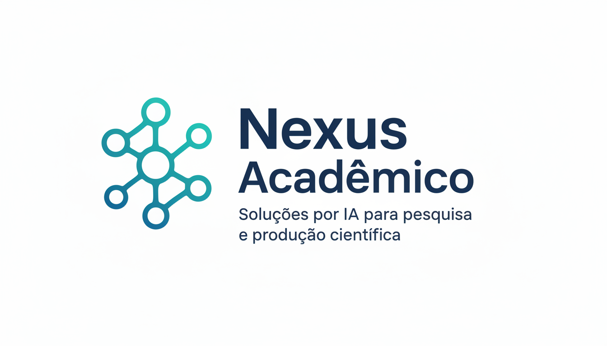

O seu hub de aplicações para produtividade acadêmica potencializadas por inovação digital.
Conectamos professores, pesquisadores, graduandos e pós-graduandos às melhores soluções de análise textual e matemática multivariada.
Aplicação em Destaque
Conheça a nossa primeira solução totalmente integrada para análise metodológica avançada.

Trama
Análise Espacial e Relacional do Discurso
O Trama é uma plataforma avançada focada na análise léxica e estatística textual multivariada para pesquisas qualitativas. O sistema converte corpus discursivos em representações visuais, métricas estatísticas e projeções topológicas de alta precisão.
- Processamento seguro com sigilo de dados
- Integração com modelos de linguagem (IA)
- Redução dimensional e estatística espacial
Estrutura e Funcionalidades do Trama
Do controle do vocabulário à estatística espacial avançada.
Léxico e Frequência
Exploração descritiva do vocabulário. Nuvem de palavras vetorial, extração de Key Word In Context (KWIC) e motor de similaridade semântica para categorização dedutiva.
Análise de Sentimento
Motor lexicográfico avançado para identificação de polaridade discursiva, varrendo frases e filtrando inversões por partículas de negação.
Estatística Espacial
Análise multivariada rica: Grafos de Similitude (Pyvis), Redução Dimensional (PCA, t-SNE) e visualizações avançadas de redes.
Modelagem de Tópicos (LDA)
Descoberta indutiva via Inteligência Artificial que identifica temas estruturais latentes no texto e sugere rótulos acadêmicos precisos.
Para quem é o Nexus Acadêmico?
Foi desenhado sob medida para suprir as exigências de rigor e reprodutibilidade do método científico.
Pesquisadores e Professores
Orientação metodológica sólida, auditabilidade robusta superando as soluções "caixa-preta" de mercado.
Pós-Graduação (Mestrado/Doutorado)
Ideal para teses e dissertações que exigem análise qualitativa profunda e exploração matemática avançada.